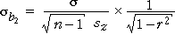

Accuracy of slope estimates in simple linear regression
When fitting a regression model with a single explanatory variable, X, the accuracy of the least squares slope depends on the error standard deviation, σ, the sample size, n, and the spread of values of the explanatory variable,

Accuracy of slope estimates with two explanatory variables
Consider the regression model

In this model, the equation for the standard errors of the two least squares estimates of β1 and β2 takes a similar form:

where r is the correlation coefficient between X and Z. The sample size, n, the error standard deviation, σ, and the standard deviations of X and Z affect the accuracy of these estimates in a similar way to simple linear regression. The model slope parameters are estimated most accurately when:
However the accuracy of b1 and b2 as estimates of β1 and β2 is also affected by r. β1 and β2 are estimated most accurately when:
As the correlation between X and Z increases, b1 and b2 also become more correlated with each other but this is less important than its effect on their separate standard deviations. (The correlation between b1 and b2 is actually -r.)
Uncorrelated explanatory variables therefore lead to the most accurate estimates of β1 and β2.
Simulation
In the diagram below, the two explanatory variables X and Z retain the same spread but their correlation can be adjusted with the slider.
Initially X and Z are moderatelly correlated. Click Accumulate and take several samples. The scatterplot on the bottom right shows the distribution of the two slope parameters. Observe that they are moderately correlated.
Adjust the slider to make the correlation between X and Z equal to 0.99 and repeat. Observe that the two slope parameters are also highly correlated and that each has a very large spread — they are very poor estimates of the underlying slope parameters, 0.5 and 0.0.
Finally make the explanatory variables orthogonal (i.e. adjust their correlation with the slider to 0.0) and repeat. Observe that the separate slope parameters are now most accurately estimated.